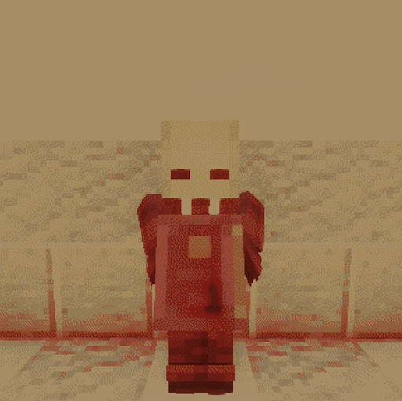

Объект
SCP-004-SP
Класс объекта
Особые условия содержания
SCP-005-1 хранится в стандартной камере хранения для аномальных предметов.
Доступ к SCP-005-1 разрешён только сотрудникам с уровнем допуска 3 и выше, исключительно под наблюдением представителя Научной службы. Персоналу запрещено давать вблизи объекта любые добровольные обещания, клятвы, сроки выполнения работ, личные обязательства и формулировки, содержащие слова «обещаю», «клянусь», «успею», «верну», «сделаю», «не забуду» и их производные.
Если сотрудник всё же формулирует обязательство в присутствии SCP-005-1, оно подлежит немедленной регистрации в журнале обязательств с точной цитатой, временем произнесения и сроком исполнения. Если срок не указан, он автоматически считается равным 7 суткам с момента фиксации обязательства. В случае нарушения зарегистрированного обязательства персонал обязан уведомить Службу безопасности и Научную службу. Попытки скрыть факт нарушения, стереть запись, уничтожить журнал или принудить субъекта к повторной формулировке обязательства запрещены.
Если на территории комплекса началась аномальная активность, связанная с SCP-005-SP, все сотрудники обязаны немедленно прекратить любые переговоры с предполагаемым нарушителем, не покидать обозначенные маршруты и не пытаться вступить в контакт с проявившейся сущностью без утвержденного протокола наблюдения.
Описание
SCP-005-1 представляет собой книгу в чёрном кожаном переплёте и позолоченным заголовком "Журнал отдела взысканий". Количество страниц в книге не ограничено и новые страницы появляются по необходимости.
Основным аномальным свойством SCP-005-1 является способность фиксировать озвученные обязательства, данные человеком в пределах 5 метров от объекта. После того как обязательство озвучено, оно проявляется в объект и становится аномально устойчивым.Если срок обязательства истекает и оно остаётся невыполненным, в пределах видимости субъекта обычно материализуется SCP-005-2.
SCP-005-2 - гуманоидная сущность мужского пола, обычно выглядящая как высокий человек в чёрном деловом костюме, с белой рубашкой, однотонным галстуком и кожаным портфелем. Лицо SCP-005-2 обычно описывается как человеческое, однако наблюдатели описывают его как совершенно не запоминающееся, без каких либо отличительных признаков. Голос сущности ровный, вежливый, без эмоциональных колебаний. Конкретные детали внешности меняются из раза в раз.
SCP-005-2 обычно появляется путём стука в дверь, или просто выходит из-за ближайшего угла. Камеры наблюдения показывают, что он просто материализуется за доли секунды из неоткуда. Сущность никогда не ломает преграды без необходимости. Она предпочитает ожидать, наблюдать и последовательно приближаться к субъекту, после чего "взыскивает" неисполненное обязательство. Способ взыскания зависит от характера обещания, степени нарушения и попыток уклонения.
При незначительных нарушениях, взыскание может ограничиться бессонницей, потерей личного имущества, символически связанного с обещанием. При грубых или намеренных нарушениях сущность способна нанести тяжёлые психофизиологические повреждения, включая длительное лишение сна, различные чувства, будь то зрение или слух, разного вида кровоизлияния, переломы и остановку сердца.
SCP-005-2 почти не реагирует на искренние попытки исполнить обязательство с опозданием. В ряде случаев сущность прекращала активность после того, как субъект завершал обещанное действие, однако это не отменяло уже причинённого ущерба.